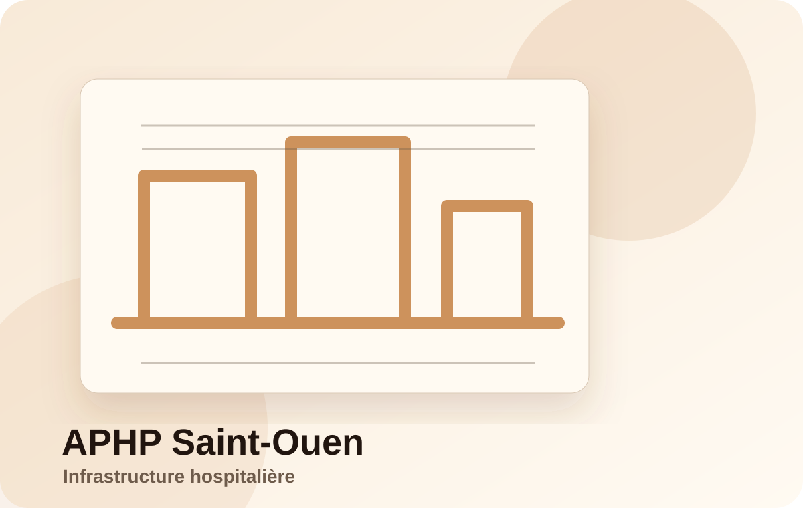

Projet
APHP Saint-Ouen — Infrastructure hospitalière
Coordination BIM et modélisation structurelle sur un projet hospitalier complexe à grande échelle.

Contexte
Projet d’infrastructure hospitalière majeur nécessitant une coordination fine entre plusieurs disciplines : structure, méthodes, fondations et logistique chantier.
Ce que j’ai fait
- Modélisation 3D des systèmes de fondations complexes : parois moulées, injections.
- Production de plans techniques d’exécution.
- Intégration des modèles dans un environnement BIM collaboratif.
- Coordination interdisciplinaire : structure, méthodes, chantier.
- Vérification de la cohérence technique et spatiale.
Résultat
- Amélioration de la coordination entre les équipes.
- Réduction des conflits techniques en phase d’exécution.
- Meilleure lisibilité des systèmes complexes pour les intervenants.